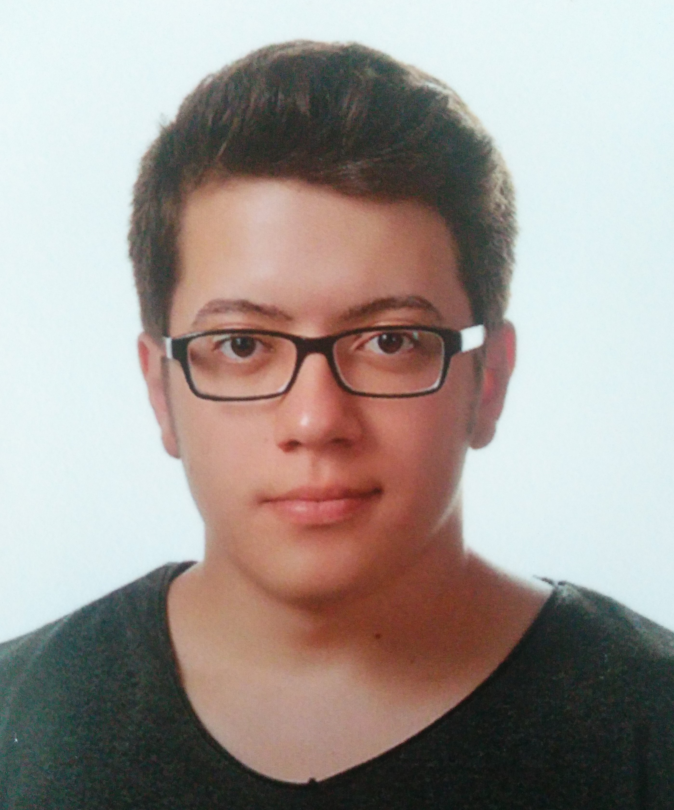

Emre Aslan

Summary
I was born on September 26, 1998. I am Mechatronic Engineer. I am creating a new career for myself as a front-end developer.
I am trying to stay up to date about software.
Education
- High school graduate of Tekirdag Special Aydin Anatolian High School (2012-2016)
- Bachelor of Mechatronic Engineering - University of Karabuk (2016-2021)
Work Experience
- Production Engineer - Lila Group
May 2021 - Present
- Increasing production efficiency
- Decreasing production changeover time
- Decreasing waste rates
- Ensuring that production complies with quality standards
- Ensuring that production is carried out in accordance with the production plan
- Ensuring the launch of new products
- Student Intern - Kaptan Iron and Steel Factory
Jun 2019 - Jul 2019
- Mechanical Maintanence Worker - E.G.O Electrical Tools Factory
Jul 2017- Aug 2017
- Student Intern - E.G.O Electrical Tools Factory
Jun 2017 - Jul 2017
Skills
- HTML5
- Kaizen
- SMED
- Microsoft Office
- Solar Energy
- Leadership
- Team Managament
Awards and Certifications
- ABB IRC5 Robot Programming Basic (July 2022)
- CNC Milling Programmin (FANUC) Certificate (May 2018)
- Computer Aided 2D Drawing Certificate (May 2017)
- Computer Aided 3D Design Certificate (May 2017)
- MEB Robot Competition Artificial Intelligent Themed Category / Referee (Apr 2019)
- Ministry of National Education Vocational and Technical Education General
Directorate - Subject: Certificate of Appreciation
Refereeing in the 13th International MEB Robot Competition with the theme of artificial
intelligence, organized by the Ministry of National Education Vocational and
Technical Education General Directorate in Samsun between 10-12 April.
- MEB Robot Competition Mini Sumo Category / Field Referee (May 2018)
- Ministry of National Education Vocational and Technical Education General
Directorate - Subject: Certificate of Appreciation
MEB General Directorate of Vocational and Technical Education held in the
12th International MEB Robot Competition with the theme of Industry 4.0
Renewable Energy Resources theme in Sivas with the cooperation of the
Ministry of National Education General Directorate of Vocational and
Technical Education and TUBITAK on 9-10-11 May 2018. Field refereeing.
- KBU Robot Competition Mini Sumo Category / Field Referee (Apr 2018)
- Robot Technologies Application and Research Center - Subject: Certificate of Appreciation
Field Refereeing at the "KBUİRO'18 Karabük University International Robot
Competition" held on April 12-13, 2018.
Other